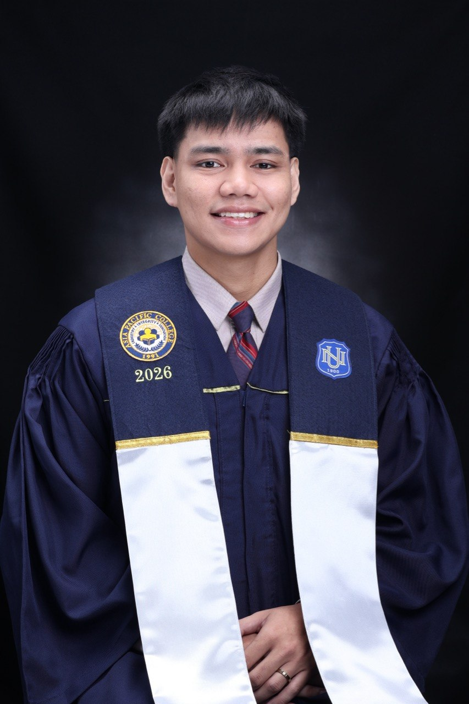

Ryan Emmanuel Quezon

Summary
Information Technology graduate with hands-on experience developing academic web and mobile applications using Java, PHP, HTML/CSS, JavaScript, and SQL. Experienced in building user-facing forms and interfaces, implementing application features, testing functionality, troubleshooting UI and system issues, and working with relational databases. Served as project manager for two capstone projects, coordinating team tasks, project progress, system presentations, and integration. Seeking an entry-level Software Developer, Web Developer, or Junior Developer position.
Education
Bachelor of Science in Information Technology with Specialization in Mobie and Internet Technologies
National University - Fairview (2022-2026)
Work Experience
World Citi Colleges & World Citi Medical Center - Aurora Blvd. Project 4, Quezon City
IT Technical Support Intern (November 2025 - May 2026)
- Managed assigned IT support tickets from initial troubleshooting to resolution, documenting and closing completed requests through the World Citi Ticketing System.
- Provided technical support to end users by diagnosing and resolving hardware, software, and network connectivity issues.
- Performed PC reformatting, Windows installation, software deployment, and workstation configuration.
- Conducted a comprehensive IT asset inventory, documenting PC and printer asset numbers, specifications, printer models, IP addresses, router information, Microsoft licenses, device condition, and equipment locations.
- Prepared and maintained IT asset and audit documentation, supporting the department's successful completion of its audit.
- Supported network and infrastructure operations by troubleshooting internet connectivity issues, tracing network cables to switches, and coordinating corrective actions to ensure continuous service availability.
- Assisted supervisors and senior IT personnel with advanced network and security tasks, including firewall-related activities and network group changes.
Skills
- Problem-solving ⭐⭐⭐⭐
- End-user support ⭐⭐⭐⭐⭐
- Hardware and software troubleshooting ⭐⭐⭐⭐⭐
- Network connectivity troubleshooting ⭐⭐⭐⭐⭐
Certifications
- The Complete Full-Stack Web Development Bootcamp - In progress
Other
Hobbies
If you want to know more about me and my hobbies, click here.
Contact
Let's work together on your next project! Click here to view my contact page.